Upon initial installation of the SMART software, you will need to set up a new Conservation Area which involves a number of configuration components.
Creating a new Conservation Area is done through the Advanced... link on the initial start up screen.
Initial Start Screen
SMART Advanced Options
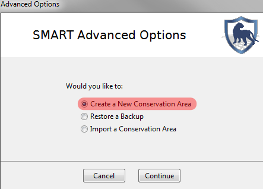
An existing Conservation Area can be used as a template to create new Conservation Areas. A template includes the data model, CA properties, stations, agencies and ranks, patrol mandates, transport types, teams, queries and reports. By using an existing template the administrator can save on time and ensure consistency between Conservation Areas.
Select the option of Create Conservation Area using existing Conservation Area as Template and then select the appropriate Conservation Area from the drop down list.
If the option of Create Blank Conservation Area is selected the wizard will continue through the remaining steps in setting up a Conservation Area.
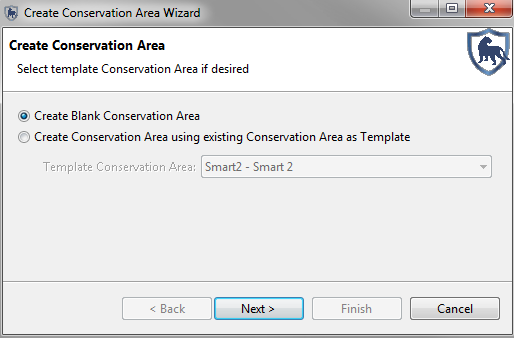
The Conservation Area Properties are names and descriptors assigned to a specific Conservation Area. These properties can help users of the SMART software manage multiple conservation areas.
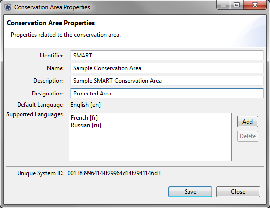
Creating an account for the primary administrator of a newly created Conservation Area is required, and the fields will need to be populated before the software will advance. After completing the form, the primary administrator’s account will be created and can be used to make any changes within the newly defined Conservation Area.
Administrative User
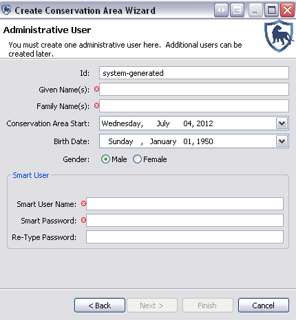
ID: The existing identifier of the Conservation Area employee. If no identifier exists, the system will generate one if left unedited.
Given Name(s): The given name of the employee
Family Name(s): The family name of the employee
Conservation Area Start: The start date of employment for the employee
Birth Date: The birth date of the employee
Gender: The gender of the employee
Smart User Name: The log-in or username used to access the SMART software
Smart Password: The password for the username
Re-Type Password: A confirmation of the account's password
Upon initialization of a new Conservation Area, the primary administrator will need to define the data model to be used for the new Conservation Area.
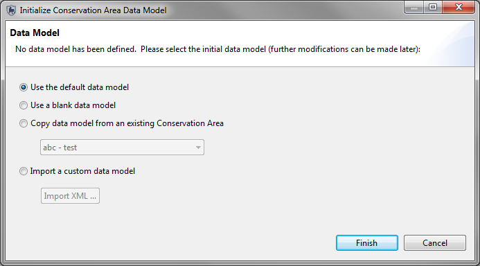
This process can be accomplished by:
After a data model has been established it is then possible to customize the data model to suit the needs of a particular Conservation Area.
Employees working within a Conservation Area, and SMART users, may belong to a particular agency, and may have a rank within that agency. Ranks are associated to agencies and have to be created as an entry under a specific agency.
As part of the initial setup of a Conservation Area, the list of Agencies and their associated Ranks is accessed through the menu “Conservation Area - Agency and Rank List …”
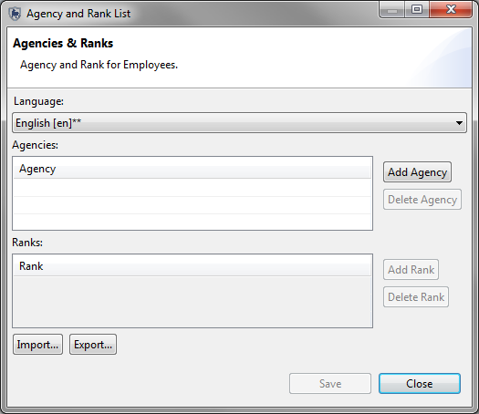
Add Agency: Adds new agencies
Delete Agency: Deletes selected agencies
Add Rank: Creates new ranks as part of the selected agency
Delete Rank: Deletes selected ranks
Import: Imports an XML file containing the list of agencies and ranks
Export: Exports an XML file containing the list of agencies and ranks
After initialization of a new Conservation Area, the Employee List contains the single administrator account that was created during the initialization of the Conservation Area. Additional employees of a Conservation Area can be entered individually, or through a bulk upload process.
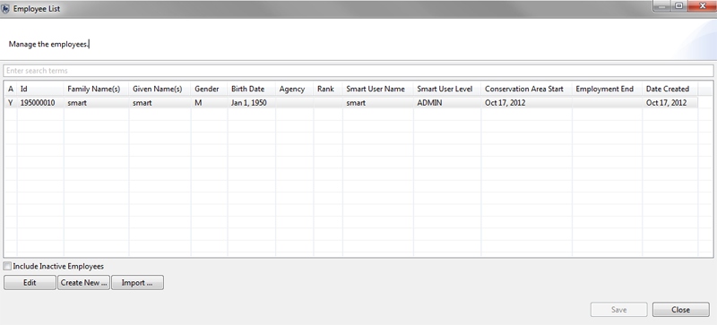
Enter search terms: text filter to shortlist entries
Import: Brings up an interface for importing a CSV to allow for bulk loading of employees.

Sample CSV (employees.csv)
Edit: Brings up interface for updating information about the selected employee

ID: The existing identifier of the Conservation Area employee. If no identifier exists, the system will generate one if this field is left unedited.
Given Name(s): The given name of the employee
Family Name(s): The family name of the employee
Conservation Area Start: The start date of employment for the employee
Inactive: If toggled, indicates the employee is no longer employed by the Conservation Area
Employment End: If the Inactive box is checked, the employment end date will become editable and allow for the recording of an employment end date
Birth Date: The birth date of the employee
Gender: The gender of the employee
Agency: Agency of the employee
Rank: Rank of the employee
Smart User Name: The log-in or username used to access the SMART software
Smart Password: The password for the username
Re-Type Password: A confirmation of the account's password
Smart User Level: The SMART User Level is updated using this pull down.
Create New: Brings up interface for updating information about the selected employee
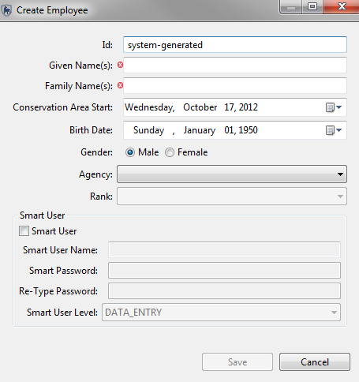
ID: The existing identifier of the Conservation Area employee. If no identifier exists, the system will generate one if this field is left unedited.
Given Name(s): The given name of the employee
Family Name(s): The family name of the employee
Conservation Area Start: The start date of employment for the employee
Birth Date: The birth date of the employee
Gender: The gender of the employee
Agency: Agency of the employee
Rank: Rank of the employee
Smart User Name: The log-in or username used to access the SMART software
Smart Password: The password for the username
Re-Type Password: A confirmation of the account's password
User Levels Permissions and Restrictions
SMART accounts have varying access permissions allowing Administrators to assign an appropriate user level to employees. The SMART design is dynamic and user accounts can be updated to accommodate changes in employees' job duties.
Data Entry
The data entry user level has the most restrictions in place. The menu bar and icons available have been customized to include only the features required for the account to enter patrol data.
The data entry user level can create, export, and import patrol data; and can create system backups after patrol information has been completed.

Analyst
The analyst user level is designed for employees to create, export, import, and run queries and reports. The analyst user level cannot create, alter or delete any queries or reports that have been saved in the Conservation Area Queries or Conservation Area Reports. The analyst user level can run, create, alter or delete reports saved in the My Queries or My Reports folders. An analyst account cannot enter patrol data or export/import patrols.

Manager
The manager account can make full changes to the patrol, query, report or planning modules. A manager account cannot make changes to the data model, nor update Conservation Area nor patrol parameters.
Administrator
The administrator account has full access to all functions and options in SMART.
After initalization of a new Conservation Area, a list of stations is required.
Name: The name of the station
Description: A detailed description of the station
Note: The language is set before entering in the name and description of the station.

Add: Adds a new Station
Disable: Disables a station from future usage
Delete: Completely deletes the station from the Conservation Area
Import: Imports an XML of Stations
Export: Exports an XML of Stations
SMART supports multiple coordinate system projections and the Administrator can select and set default projections. This process is not a requirement during the initialization of the Conservation Area.

Add: Adds projections to the Conservation Area
Delete: Deletes projections from the Conservation Area
Edit: Allows for custom parameter edits to the selected projection
Set Default: Sets the selected projection as default for the Conservation Area
As part of the initialization process the new Conservation Area will require boundary files to be loaded. Not every Conservation Area will have boundary files for all 5 types and not all 5 are required.
ESRI Shapefiles are the default format for loading into SMART.
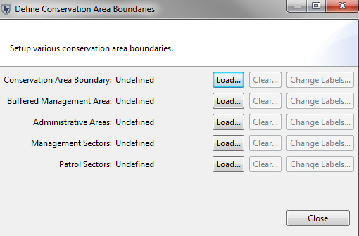
Load: Opens a window where the Administrator will select the ESRI Shapefile.
Clear: Clears or deletes the chosen Shapefile from the Conservation Area.
Change Labels: Allows the Administrator to select a different field that will be used for display and labelling.
Note: A projection file (.prj) is required by SMART and if not present during the loading of the Shapefile, the application will reject the Shapefile.
Basemaps are essentially saved cartographic display parameters and are created in the Mapping Perspective window. The Administrator can set a default basemap for the Conservation Area or delete basemaps from this window. This process is not a requirement during the initialization of the Conservation Area.
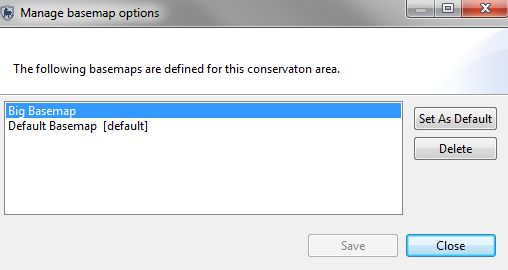
Rename: Dialog to rename or provide translations for the basemap names
Set As Default: Sets the selected basemap as the default for the entire Conservation Area
Delete: Deletes the selected basemap
To change your username and/or password, from the main File menu select "Change Password ..."
To change your username, click on the button labelled "Change...", type in a new username, and then click on the "OK" button. Once you click this "OK" button, the username has been updated.
To change your password, type in your current password next to "Current Password:", and type a new password next to "New Password:". You must also confirm the new password by typing it again next to "Re-type New Password:". Then click on the button labelled "Save" to implement the new password. If you decide that you do not wish to save the new password, you can instead click on the button labelled "Close".
To change the password of another account: An administrator account is required to reset the password of another account. The administrator will need to enter in to the Conservation Area menu and select "Employee List". The next step is to select the employee and click "Edit" at the bottom of the window. This will bring up the Update Employee window and the administrator can reset the password from this window.
SMART’s ability to Export and Import patrols allows for distributed data entry and reloading into a master system, as well as functioning as a backup file in the event of data loss. Exported patrol files from SMART will be in XML format.
To export one or more patrol(s), from the main Patrol menu select "Export Patrols ...". Choose a Destination Folder using the "Browse" button. This will be the location of the file(s) that you export.
Select the tick-box "Include Attachments" if you wish to include file attachments such as image files.
Choose the patrols that you wish to export from the list. You can individually select patrols, or select all at once.
When you have selected a Destination Folder, indicated whether to include File Attachments, and selected the patrols that you wish to export, then you may click on the button at the bottom labeled "Export" to create the file(s) of patrol data. Note that a file will be created for each patrol that you export.
The program will tell you the number of patrols that were successfully exported. Click "OK" to this. Thus, you have created a file or files that contain patrol data. The file(s) can be shared with others and loaded into other installations of SMART.
To import a SMART patrol file, from the main Patrol menu select "Import Patrols ...". Choose whether you wish to import a single patrol ("Import Single Patrol"), or multiple patrols ("Import Multiple Patrols").
If it is a single patrol, then use the "Browse..." button to navigate to the folder containing the patrol, and select the patrol that you wish to import. Click on the "Open" button. Then click on the "Import" button.
To import multiple patrols, use the "Add Files..." button to successively add patrol files to the list for importing. Then click on the "Import" button when you have added all of the desired patrols to the list.
To assist in distribution of a well designed data model or to protect against data loss, SMART can export the data model in a structured XML format. This XML file can be used to construct a new Conservation Area or to rebuild a corrupt Conservation Area.
To export a SMART data model to XML format, from the main Conservation Area menu select "Data Model ...". At the bottom of the window, click on the "Export to XML ..." button. Navigate to the folder location where you want to save the XML data model. And then type in a File name for the name of the file you are saving. Click on the "Save" button to create the XML data model file. Wait for the software to tell you that the data model has been successfully exported, and then click on the "OK" button.
The exporting of a Conservation Area will export all of the components of a particular Conservation Area. This function not only allows for the archiving of a Conservation Area, but also for distribution and sharing.
To export a Conservation Area, from the main File menu select "Export Conservation Area ...".
Use the "Browse..." button to navigate to a location where you wish to store the file. It is recommended that you not change the file name. When you have found the location in which you wish to store the file, click on the "Save" button. Then click on the "Export" button to create the file containing the exported Conservation Area. The software will tell you when it has exported the Conservation Area successfully. Click "OK" when you get this message.
From the initial SMART startup screen, you can import a Conservation Area from a saved file. To do so, click on the "Advanced Options" button, and then select "Import a Conservation Area" and click on the "Continue" button.
You may be prompted to backup the current database prior to importing your conservation area, in case there is already a conservation area of the same name within the database. It is generally a good idea to click the "Yes" button to create a backup file, in which case you will specify a location and filename, and then click the "Backup" button. But you may also choose "No".
Now you will use the "Browse" button to locate the saved conservation area file that you wish to import. Once you have found the file, click on the "Open" button and then click on the "Import" button. The software will let you know that it has completed the import of the conservation area; click on the "OK" button to proceed.
Now that you have successfully imported the conservation area, you will need to log into the conservation area from the start screen, using an appropriate username and password. If the conservation area that you imported belongs to you, then you will know the username/password. If someone sent the conservation area to you, then you will have to ask that person for the username/password to use.
It may occasionally be necessary to delete a Conservation Area.
Three example reasons to do so are:
Hopefully, if a conservation area has become corrupted or otherwise has become unusable due to a data issue, you will be restoring a backup of the Conservation Area after you delete the bad version.
Please be sure that you understand the consequences of deleting a conservation area. If at all in doubt, it is recommended that you do not proceed.
To delete a Conservation Area, from the main Conservation Area menu select "Delete Conservation Area". Read the warning and then click the "OK" button if you wish to proceed. Then type in your username and password in order to confirm the action. Click on the "Delete" button to delete the current Conservation Area.
Once the deletion has been completed, the SMART software will open an initial start screen. If no other conservation areas exist, the software will present some options for proceeding.
Please note that you can only delete the conservation area that you are currently logged into.
The Backup System function will create a backup file of the entire database, and thus it provides a backup of every Conservation Area managed by the database. If you wish to backup a single conservation area, it is better to use the "Export Conservation Area ..." function of the main File menu.
To create a backup of the entire SMART database, from the main File menu select "Backup System".
Use the "Browse..." button to navigate to a location where you wish to store the backup file. It is recommended that you not change the file name. When you have found the location in which you wish to store the file, click on the "Save" button. Then click on the "Backup" button to create the backup file of the entire SMART database. The software will tell you when it has successfully created the backup file. Click "OK" when you get this message.
Remembering to perform regular backups is critical to ensuring that data can be recovered in the event of a system crash. SMART has the ability to automatically perform regular backups to a specified folder. The backup will include the entire SMART database.
To configure an automatic backup, from the main File menu select System Preferences then the link on the right of "Automatic Backups".
There are three parameters that you can set on the Auto-Backup Configuration page.
First, you set the frequency of the automatic backup. A value of "1" means that a backup file will be created every day. A value of "7" means that a backup file will be created once every 7 days. A value of "0" means that a backup file will be created every time that the application is closed. A value of "-1" tells the system not to perform automatic backups.
Second, you tell the system how long it should store automatic backup files. These files are large, and so frequently creating backup files will consume considerable disk space. A value here of "10" means that SMART will delete backup files that are older than 10 days. To create a longer term archive, you should periodically copy a SMART backup file to a separate location.
Third, you should specify the location where you wish to store the automatic backup files (until the system deletes them based on their age). Use the "Browse..." button to navigate to a location where you wish to store the backup file. The filenames will automatically be created, but you can choose a folder location.
Once you have set these three parameters, click the "Save" button to implement these Automatic Backup settings. Note that a backup will not be performed at this precise moment; automatic backups are performed, if scheduled, when you close the software.
The SMART software is an extensible design that allows for a repository of additional plug-ins to be installed by an Administrator. The SMART plug in system uses a built in installer that accesses a remote site or a local file containing the additional plug ins.
Access to the Plug-In Installer is found in the File Menu.
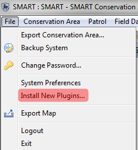
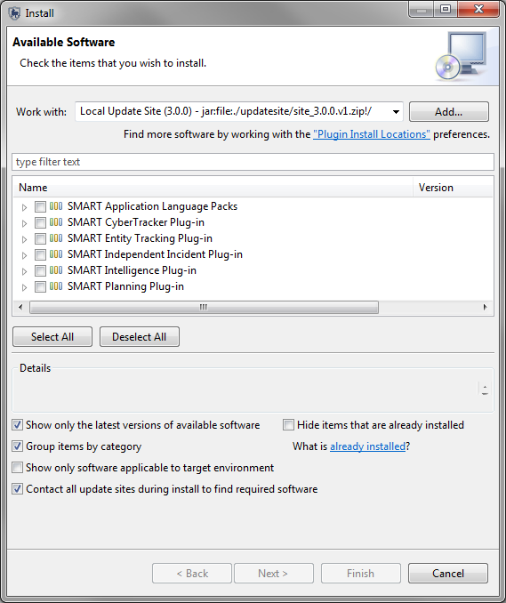
The Plug-In Installer allows the Administrator to select which plug-ins (or components of the plug-ins) that will be added to the working Conservation Area.
Note: Available Language packs are installed using the Plug-In interface.
After the selection of requested Plug-Ins the installer will preform validation checks to ensure that a plug-in isn't already present and creates a simple wizard for the install process.
Notes on System Back-Ups and Conservation Export/Imports
System Backups and Restores require the SMART intallation to have the same configuration as the system restore file. If the system retore file has a different configuration than SMART installation the restore process will fail. If a failure occurs then the Administrator will have to update the SMART installation to match the restore file before a successful restore will be possible.
The Conservation Area import process is handled differently and if the import file has data from additional plug-ins that the active SMART installation does not then that information will not be imported. The import will not fail but it will mean that information is not imported. If the addition data is required then it is recommended to delete the newly imported Conservation Area, install the appropriate plug-ins, then reimport.
Unstalling Plug-Ins
If an optional plug-in needs to be uninstalled the Administrator will need to enter into the Help - About SMART screen and select the Installation Details option. This will bring up the SMART INtallation Details screen that contains technical information about the SMART installation. The tab Installed Plugins is where the optional plug-ins can be uninstalled.
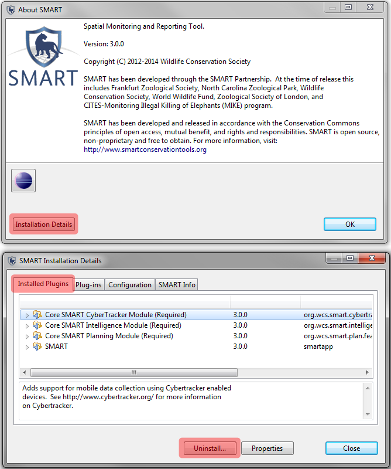